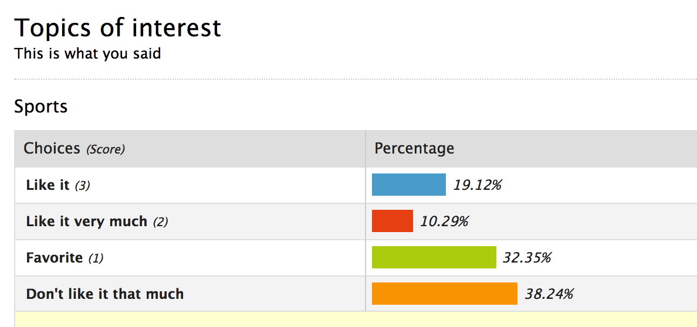
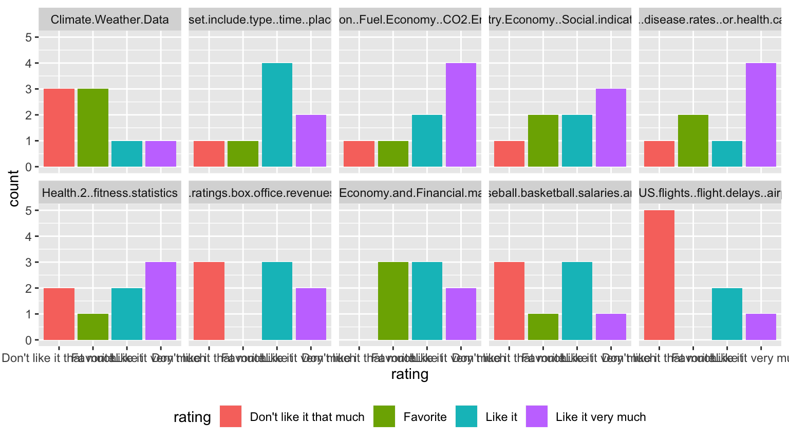
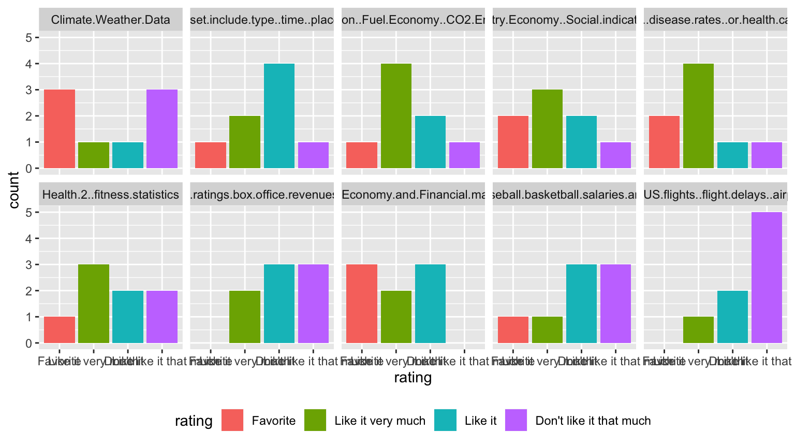
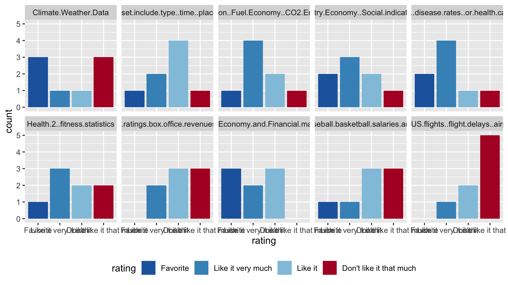
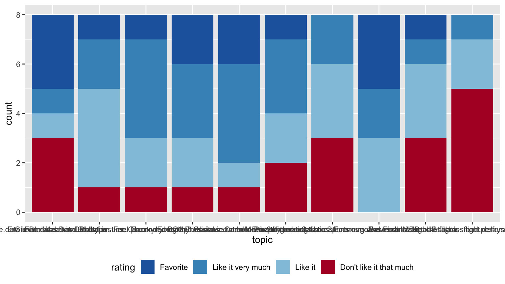
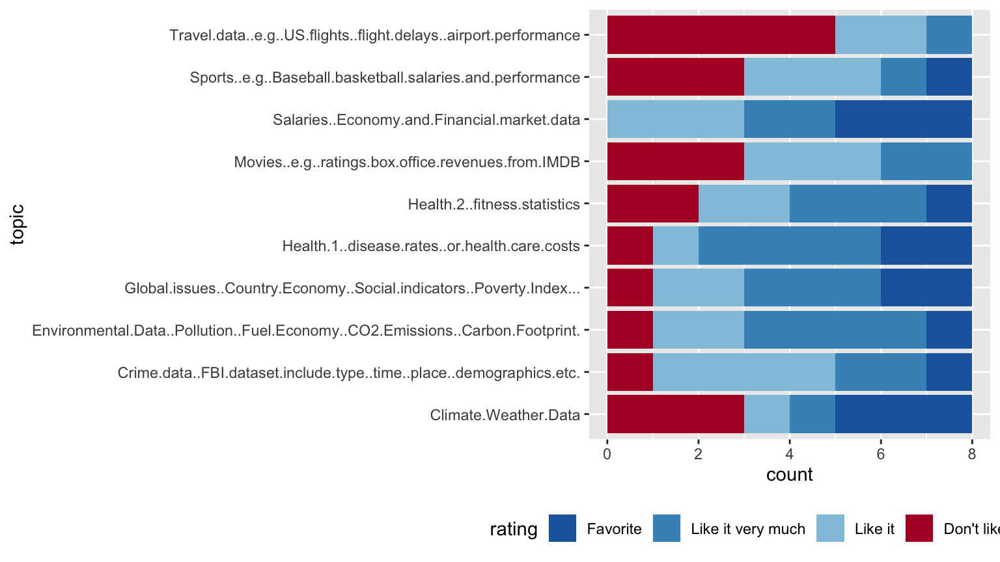
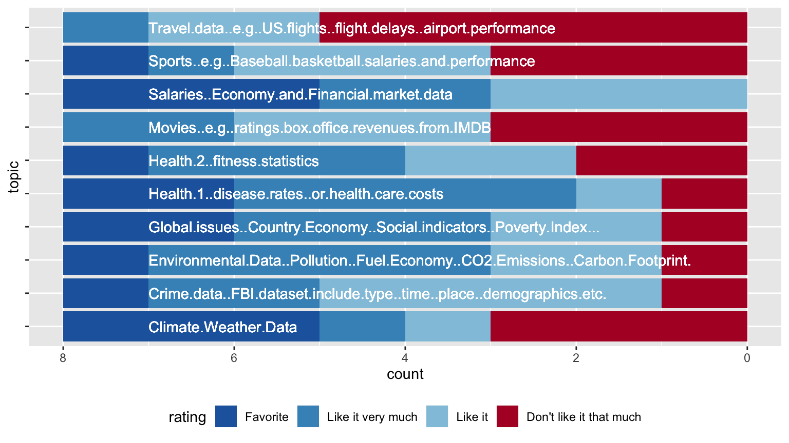
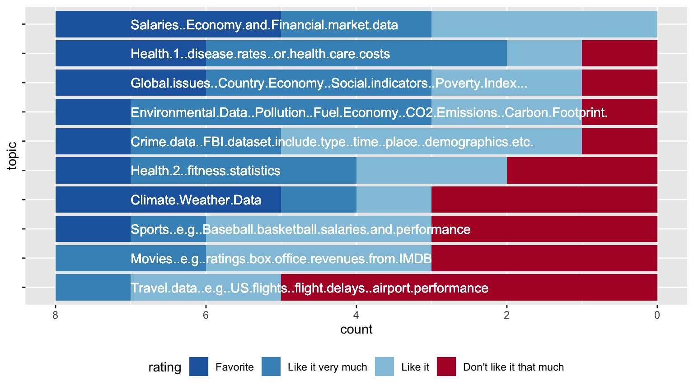

Yumou Qiu

… there’s nine more of these charts … which topic is the best?
… this is what the raw data looks like …
## Sports..e.g..Baseball.basketball.salaries.and.performance
## 1 Like it
## 2 Like it
## 3 Favorite
## 4 Don't like it that much
## 5 Don't like it that much
## 6 Don't like it that much
## Crime.data..FBI.dataset.include.type..time..place..demographics.etc.
## 1 Like it very much
## 2 Like it
## 3 Like it
## 4 Like it
## 5 Favorite
## 6 Don't like it that much
## Health.1..disease.rates..or.health.care.costs Health.2..fitness.statistics
## 1 Like it very much Like it
## 2 Like it very much Like it very much
## 3 Don't like it that much Like it very much
## 4 Like it Like it
## 5 Favorite Like it very much
## 6 Favorite Don't like it that much
## Movies..e.g..ratings.box.office.revenues.from.IMDB Climate.Weather.Data
## 1 Don't like it that much Like it very much
## 2 Don't like it that much Favorite
## 3 Like it very much Don't like it that much
## 4 Like it Don't like it that much
## 5 Like it Don't like it that much
## 6 Like it Favorite
## Travel.data..e.g..US.flights..flight.delays..airport.performance
## 1 Don't like it that much
## 2 Don't like it that much
## 3 Like it very much
## 4 Don't like it that much
## 5 Like it
## 6 Like it
## Environmental.Data..Pollution..Fuel.Economy..CO2.Emissions..Carbon.Footprint.
## 1 Like it very much
## 2 Like it very much
## 3 Like it very much
## 4 Don't like it that much
## 5 Like it
## 6 Favorite
## Global.issues..Country.Economy..Social.indicators..Poverty.Index...
## 1 Favorite
## 2 Like it
## 3 Like it very much
## 4 Don't like it that much
## 5 Like it
## 6 Favorite
## Salaries..Economy.and.Financial.market.data Date.Created Created.By
## 1 Like it 2018-08-21 14:34:40 public
## 2 Like it 2018-08-21 15:24:36 public
## 3 Like it very much 2018-08-21 15:40:42 public
## 4 Like it 2018-08-21 15:52:27 public
## 5 Like it very much 2018-08-21 16:35:08 public
## 6 Favorite 2018-08-21 17:19:46 public
## Last.Updated Updated.By IP.Address Last.Page.Accessed Completion.Status
## 1 NA NA 129.186.251.5 1 1
## 2 NA NA 129.186.109.6 1 1
## 3 NA NA 107.77.207.138 1 1
## 4 NA NA 129.186.252.84 1 1
## 5 NA NA 65.110.255.46 1 1
## 6 NA NA 129.186.253.202 1 1## Warning: attributes are not identical across measure variables;
## they will be dropped





